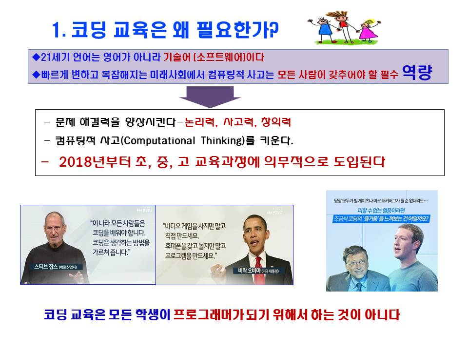
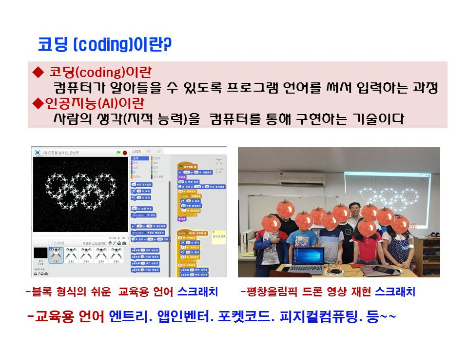
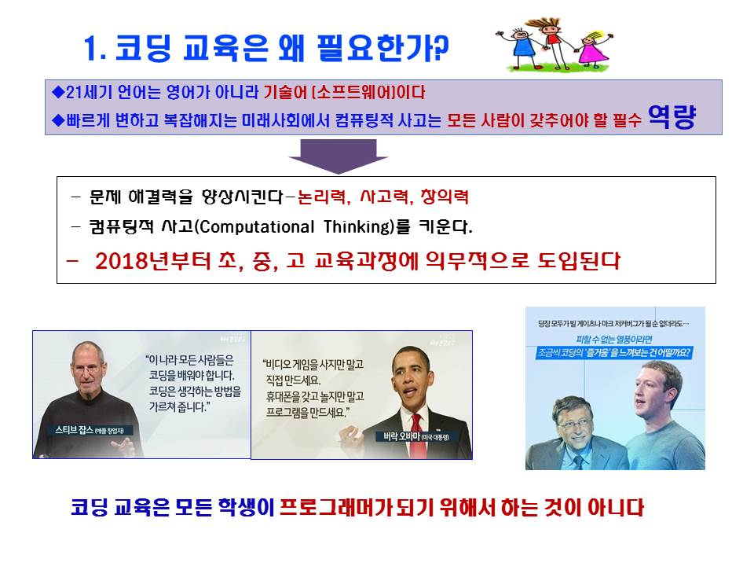
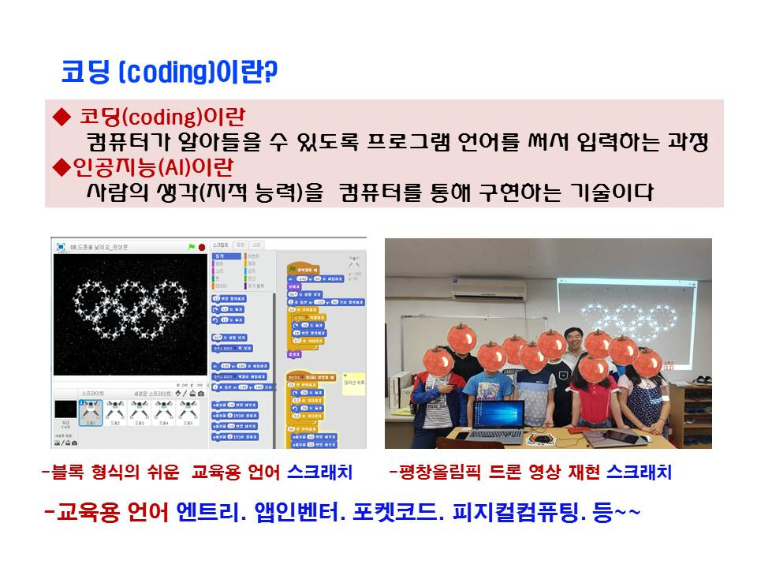
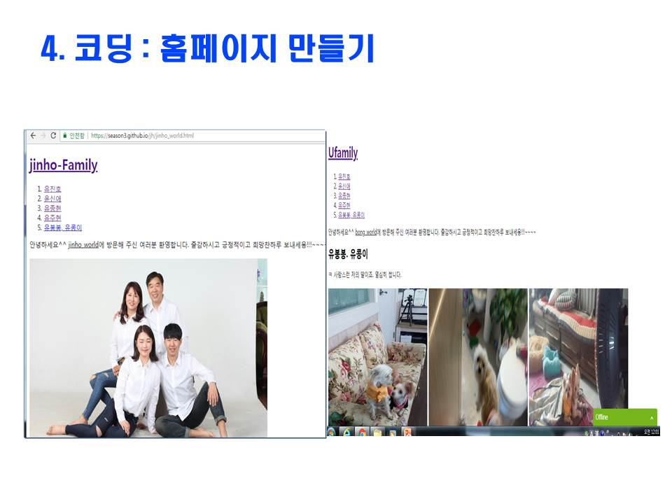
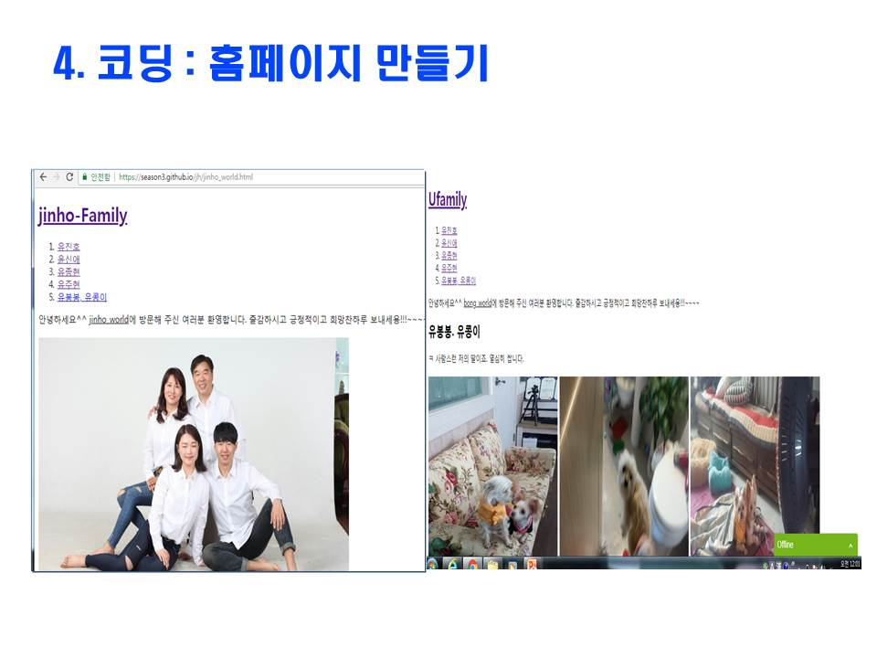

4차혁명시대 필수 코딩(소프트웨어)
세계 선진국에서는 이미 코딩을 오래전부터 4차혁명시대의 역동적인 미래를 선도하며 학생들을 교육하고 있습니다.
우리나라도 늦은 감이 있지만 내년부터 초등 5,6학년. 중학교 정규교과. 고등학교는 선택과목으로 채택되어 코딩교육이 의무화 됩니다.
코딩은 학생들에게 교육목표인 논리적사고와 창의.융합적 사고력등 생각의 힘을 키우는데 강력하고 휼륭한 도구입니다.
뿐만아니라 인공지능, 3D프린터, 자율주행차, 로봇, 게임, 사물인터넷. 빅데이터 등이 중심이 되는 앞으로의 사회에서는 산업분야는 물론 교육, 의료등
각 모든 분야에 최첨단 기술이 적용되는데 그 기반이 되는 코딩(소프트웨어)기술이 미래직업의 60%이상 차지한다고 합니다. 다가오는
4차혁명시대에는 코딩을 이해하고 습득하는 사람과 그렇지 못한 사람의 차이로 양극화현상이 더욱 심화됨에 따라 미래사회가 요구하는 코딩을
반드시 습득하여 변화에 대비해야만 하겠습니다.
저희 학원에서는 코딩지도사1급을 보유하고 방과후 교사로 활동 중인 강사님께서 초등용 블록형태의 교육용 프로그램인(스크래치, 엔트리)부터
중. 고등용의 다양한 프로그래밍 언어(C, 자바, 자바스크립트, 파이썬 등)를 체계적으로 교육하고 있습니다.
문의할 사항이 있으시면 연락주세요. 성실히 답변해 드리겠습니다^^ 좋은하루되세요!!!~~~ 466-8882. 01036568849.
 




 
